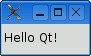

This chapter shows how to combine basic C++ with the functionality provided by Qt to create a few small graphical user interface (GUI) applications. This chapter also introduces two key Qt ideas: "signals and slots" and layouts. In Chapter 2, we will go into more depth, and in Chapter 3, we will start building a more realistic application.
If you already know Java or C# but have limited experience with C++, you might want to start by reading the C++ introduction in Appendix D.
Let's start with a very simple Qt program. We will first study it line by line, and then see how to compile and run it.
1 #include <QApplication> 2 #include <QLabel> 3 int main(int argc, char *argv[]) 4 { 5 QApplication app(argc, argv); 6 QLabel *label = new QLabel("Hello Qt!"); 7 label->show(); 8 return app.exec(); 9 }
Lines 1 and 2 include the definitions of the QApplication and QLabel classes. For every Qt class, there is a header file with the same name (and capitalization) as the class that contains the class's definition.
Line 5 creates a QApplication object to manage application-wide resources. The QApplication constructor requires argc and argv because Qt supports a few command-line arguments of its own.
Line 6 creates a QLabel widget that displays "Hello Qt!". In Qt and Unix terminology, a widget is a visual element in a user interface. The term stems from "window gadget" and is the equivalent of both "control" and "container" in Windows terminology. Buttons, menus, scroll bars, and frames are all examples of widgets. Widgets can contain other widgets; for example, an application window is usually a widget that contains a QMenuBar, a few QToolBars, a QStatusBar, and some other widgets. Most applications use a QMainWindow or a QDialog as the application window, but Qt is so flexible that any widget can be a window. In this example, the QLabel widget is the application window.
Line 7 makes the label visible. Widgets are always created hidden so that we can customize them before showing them, thereby avoiding flicker.
Line 8 passes control of the application on to Qt. At this point, the program enters the event loop. This is a kind of stand-by mode where the program waits for user actions such as mouse clicks and key presses. User actions generate events (also called "messages") to which the program can respond, usually by executing one or more functions. For example, when the user clicks a widget, a "mouse press" and a "mouse release" event are generated. In this respect, GUI applications differ drastically from conventional batch programs, which typically process input, produce results, and terminate without human intervention.
For simplicity, we don't bother calling delete on the QLabel object at the end of the main() function. This memory leak is harmless in such a small program, since the memory will be reclaimed by the operating system when the program terminates.
It is now possible to try the program on your own machine. It should look like the one shown in Figure 1.1. First, you will need to install Qt 4.3.2 (or a later Qt 4 release), a process that is explained in Appendix A. From now on, we will assume that you have a correctly installed copy of Qt 4 and that Qt's bin directory is in your PATH environment variable. (On Windows, this is done automatically by the Qt installation program.) You will also need the program's code in a file called hello.cpp in a directory called hello. You can type in hello.cpp yourself or copy it from the examples that accompany this book, where it is available as examples/chap01/hello/hello.cpp. (All the examples are available from the book's web site, http://www.informit.com/title/0132354160.)

From a command prompt, change the directory to hello, and type
qmake -project
to create a platform-independent project file (hello.pro), and then type
qmake hello.pro
to create a platform-specific makefile from the project file. (The qmake tool is covered in more detail in Appendix B.) Type make to build the program. Run it by typing hello on Windows, ./hello on Unix, and open hello.app on Mac OS X. To terminate the program, click the close button in the window's title bar.
If you are using Windows and have installed the Qt Open Source Edition and the MinGW compiler, you will have a shortcut to an MS-DOS Prompt window that has all the environment variables correctly set up for Qt. If you start this window, you can compile Qt applications within it using qmake and make as described previously. The executables produced are put in the application's debug or release folder (e.g., C:\examples\chap01\hello\release\hello.exe).
If you are using Microsoft Visual C++ with a commercial version of Qt, you will need to run nmake instead of make. Alternatively, you can create a Visual Studio project file from hello.pro by typing
qmake -tp vc hello.pro
and then build the program in Visual Studio. If you are using Xcode on Mac OS X, you can generate an Xcode project using the command
qmake -spec macx-xcode hello.pro
Before we go on to the next example, let's have some fun: Replace the line
QLabel *label = new QLabel("Hello Qt!");with
QLabel *label = new QLabel("<h2><i>Hello</i> "
"<font color=red>Qt!</font></h2>");and rebuild the application. When run, it should look like Figure 1.2. As the example illustrates, it's easy to brighten up a Qt application's user interface using some simple HTML-style formatting.